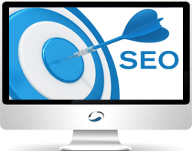

Website Services
A website is the starting point from where customers get to know about your products and services since it’s the first interaction point between you and the customer in the digital sphere. ABS can ensure that this interaction between you and the customer occurs very smoothly and help you to build your brand through proper engagement. ABS has the creative as well as technical expertise to design your website integrated with our entire digital marketing solutions. We have an experienced in house expertise to deliver better digital experience using responsive design techniques along with ensuring an enriching content and engaging experience for the customers. After doing a complete scoping of your business objectives and understanding your requirements, our talented multi-disciplinary team consisting of web designers, analysts and software developers will use their creative and technical expertise to design an easy navigable website and applications, ensuring a better online experience of your products and services. We use the latest industry standards HTML 5, CSS, content management systems and responsive design techniques to design a robust website/apps. Our technical resources work with new technologies and have the experience to create custom online solutions such as websites, ecommerce storefronts, interactive applications and additional modules. Our content experts will ensure that your website keep your audience engaged till the conversion. We consider basics of digital marketing while at the inception of designing website.We design websites, which are search engine friendly so that your products and services are prominently visible on search engine result pages. Our search engine marketing team will focus on getting your website the maximum number of quality leads and optimum ROI. We focus on designing creative and quality websites, which takes care of the browser experience and make the site engaging enough to improve your business conversion rate. Accessibility ABS ensures that any project undertaken is in compliance with the W3C standards of accessibility.
Social Media Marketing
Increased communication for organizations fosters brand awareness and often improves customer service. In today’s global online reach, it is essential to stay in touch and engage yourself directly with the current and prospective customers. ABS’s social media marketing services can establish your brand on the major social media platforms and enable you to interact directly with the customers. Social Media Marketing is a vital part of the digital marketing strategy to promote your brand in a direct and positive way among your target group of customers. We will be using advance social media marketing tools for your brands. Our social media marketing services will allow your brands to reach customers through multiple social media channels and offer you a chance to do complete monitoring of your brands and customer sentiment analysis, thus helping you in the process to do better marketing of your products and services. ABS is using set of robust social media marketing technical platform, which can easily integrate the latest social networks as they become available. With our help, you can engage with new and existing customers on multiple social channels, whom we can monitor through their mentions about brands, competitor’s industry terms and sentiments. Our technical expertise can help you to measure the effectiveness of a particular post of the campaign, in turn helping your business to grow. We approach social media marketing by doing a lot of current data analysis and a careful study of current market trends before any reference is given. Create & Engage After a careful analysis, we will create and distribute the content at once through multiple social media channels such as Facebook, Twitter, LinkedIn, Pinterest, etc. Hence using our social media tools, we can do bulk publishing of your brands content and target the right audience. We can also schedule your posts as per your preferences with our social media tools. Monitor & Listen It is very important to monitor your brands performance and listen to customer conversations and analyze their sentiments. We will also monitor the positive and negative reviews received in notifications and manage all of your social streams by tracking your social media properties. Measure Our services for Social Media Marketing can generate quick detailed reports by measuring your campaigns success metrics and you can also track down the social media profiles, content messages and mentionable sources of your brands over the specified period of time. Growth Social Media Marketing can help you to find new prospective customers whom you can target and ensure business growth of your brands. Get into a direct conversation with the customers through the social platform.

Search Engine Optimization
If your products and services are not found by your target audience in search engines, then you are missing out on a significant number of prospective customers who are looking for information regarding your product, service or organization. Search Engine Optimization or inbound marketing plays a critical role in ensuring the success of any organization and the business growth. It has to be perfect, so that your products and services are visible to millions of potential customers. Hence, it’s important to avoid any wrong step which will affect your brand presence in the digital space and as a result is positioned deep down in search engine result pages where it can’t be seen by your target audience. ABS is a well established Search Engine Optimization company in India known for ethical Search Engine Optimization services. We can help you by becoming your Digital Marketing Services partner and optimize your online presence for inbound marketing and ensure business growth and development by showcasing your products and services to your target audience in a more advance technological way. Before we do Search Engine Optimization, we do proper research for your business, understand your objectives and analyze your customer’s current tastes and preferences. Since search engine optimization is a continuous ongoing process we keep optimizing your website for search engines by periodically measuring the key performance indicators and optimizing your business accordingly. We can help you achieve success by constantly innovating and implementing new ideas which can boost the presence of your products and services online. Some of the steps we include in our search engine optimization process: Research for SEO Clearly define objective of your business and internet presence Brainstorm and understand your business for search queries your customers might be searching Research chosen keywords or search queries Record the best keywords depending upon search volume and relevancy of keywords as per your business We will let analytics run for few weeks before starting search engine optimization (SEO) if you already have a website – This allows analytics to collect data and provide us with a baseline Analyze for SEO By using analytics and webmaster tools we will identify the current position of your website in various search engine result pages (SERP) Evaluate the visual design and navigation architecture of your website – If the site drives your internet consumers away, no amount of SEO efforts will rank you well in search engines Competitive analysis, create a list of competition and their performance on search engines Optimize Depending on the research we will optimize your website as per your business requirement and your customer behavior on the internet i.e. search engines and search volume of the search queries We will do search engine optimization which will cover onsite, offsite and local search optimization Check compatibility between browsers and W3C standards Evaluate We will evaluate your website by using analytics tool to provide you reports of your website ranking in search engines, keyword ranking and visitor/traffic and conversion reports etc. Interested in knowing more about Search Engine Optimization please visit this page.
E-mail Marketing
Most of the times the emails sent are filtered out by customers since they are irrelevant to their current taste and preferences, as a result without any conversion and leads your marketing budget to become ineffective. If you want to market your products and services in less time by spending less for the right customers, then ABS can help you in approaching them in a faster and a more effective way. ABS’s email marketing service helps you to send customized messages in bulk to specified target groups of your database and engage with them in social media space. Through emails we help you to establish a direct engaging personal relationship with customers, which is valuable for your business. Email marketing is undertaken by us only after a detailed analysis is being done on the current and prospective buyers of your products and services. Using our email tools send out mails that are integrated with the social media and landing pages keeping in mind to generate quality leads, better engagement and better ROI. The following process is adopted by ABS for email marketing. Strategy Our team’s expertise lies in providing an easy and approachable way of giving you important strategic assistance for your business. So you are better equipped in comparison to your competitors with the most effective email campaign. We combine technology, insights & analytics and industry expertise that can provide you with quick and effective solutions for email marketing. Contact List Management It’s important to maintain a list of targeted customers with whom we can connect, communicate and also ensure optimum conversions. We can help you to do better targeting millions of prospective customers and then build your entire email campaign accordingly. Create & Design Our email developers use their skill-set to design a unique customized email. We will offer creative and technological expertise in designing an email, using our creative concepts and brand development ideas. Furthermore, we can create personalized landing pages focussing on the email campaign content and better customer experience. Targeted & Follow Up Emails ABS’s email marketing services can help you to send mails related to your products and services to exact target groups. You also have the option to follow up with the interested customers via email marketing or social media touch points and engage directly with them. Campaign Tracking, Analysis & Reporting After sending out emails, we will measure the success of the email campaign and analyse the performance and report on the basis of usage, click-through, opens, trends, subscriptions, hard bounce, soft bounce, social engagement etc.
Online Marketing
Online Marketing plays a critical role in overall marketing mix of an organization, as the percentage of internet consumer spending grows, more and more businesses are allocating portions of their budgets to online advertising. Being seen by your audience is only half the battle won. To drive return on investment or return on advertising spend, a thorough and diversified online advertising strategy must be in place, one that combines PPC, PPA, PPI and social media marketing tactics for optimal performance of the campaign. ABS provides an integrated online advertising campaigns that exposes to prospective buyers. Once a campaign begins, we track pertinent information such as traffic, conversions and user behavior. Our approach to online advertising combines creative messaging with required back-end analysis, to see what’s working and what could work better. We specialize in various forms of online advertising including: Pay Per Click Contextual Advertising Pay Per Acquisition Pay Per Impression Local Search Advertising Text Link Advertising Banner Ads Web Video Advertising Our Online Advertising services include: Online Ad Strategy Before spending time, we determine which PPC engines (Yahoo, Google, MSN, Ask etc.) and banner ad networks (DART, 24/7, Blogosphere, etc.) are most suitable. Target budgets for PPC and PPI campaigns are set, while ideas for creative and promotional campaigns are conceived and organized. Media Planning & Placement Occurring simultaneously with ad strategy, online media planning and placement is employed in an ongoing effort. It ties in closely with analytics to determine which networks, creative ads and keywords are yielding the best conversion rates. Bid Management Facilitates bidding and controls budgets on thousands of keyword phrases for all of search engines. Copy-writing It’s a scientific fact the wording of titles and descriptions impacts click-through rates, especially for paid searches. For example, using the same titles and descriptions for “cars” and “used cars” is a classic mistake and lost targeting opportunity. Time-consuming as it is, ABS experiments with variations and writes targeted copy for each keyword phrase to ensure optimal client benefit. Rich Media Banner Design Movement and interaction within banner ads attracts higher click-through rates. The goal is to design a series of interactive banner ads relative to different types of products. This gets the client into consumer psychology and behavioral targeting. Interested to read more about online marketing please visit Wikipedia